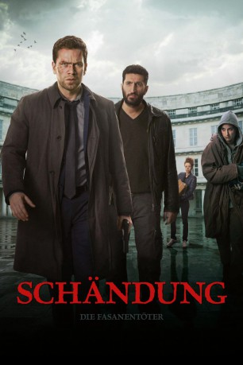

#1853 Jussi Adler-Olsen 2 - Schändung
Alternativ: Schändung (Englischer Titel)
 
 IMDB-Wertung: 7.1 / 10
IMDB-Wertung: 7.1 / 10  Metascore: 61
Metascore: 61 
Vor 20 Jahren wurden Zwillingsgeschwister brutal umgebracht. Die Ermittlungen gegen die des Doppelmords verdächtigte Schüler-Clique eines Nobelinternats wurden bald eingestellt, die Zeugin, die damals panisch einen telefonischen Notruf absetzte, nie verhört. Da findet Carl Mørck bei einem Selbstmörder eine an ihn adressierte Akte, die neue Details zum Fall enthält. Er prüft die Unterlagen, entdeckt Unstimmigkeiten und beginnt sehr zum Ärger seiner Vorgesetzten mit seinem Kollegen Assad zu recherchieren.
Jahr: 2014
Dauer: 119 Minuten
FSK: 16
Land: Dänemark Studio: NFP Marketing & DistributionTonspuren:
Untertitel: Deutsch,
Auflösung: 1080p (1920x808) Größe: 4198 MB
Genre: Thriller, Krimi
Regisseur: Mikkel Nørgaard
Drehbuch: Nikolaj Arcel, Rasmus Heisterberg, Jussi Adler-Olsen, Nikolaj Arcel, Mikkel Nørgaard
Soundtrack: Patrik Andrén, Uno Helmersson, Johan Söderqvist
Darsteller:
 Nikolaj Lie Kaas als Carl Mørck
Nikolaj Lie Kaas als Carl Mørck Fares Fares als Assad
Fares Fares als Assad Pilou Asbæk als Ditlev Pram
Pilou Asbæk als Ditlev Pram David Dencik als Ulrik Dybbøl
David Dencik als Ulrik Dybbøl- Danica Curcic als Kimmie
- Sarah-Sofie Boussnina als Kimmie som ung
- Marco Ilsø als Ditlev som ung
- Beate Bille als Thelma
- Peter Christoffersen als Alberg
 Søren Pilmark als Marcus Jacobsen
Søren Pilmark als Marcus Jacobsen- Adam Ild Rohweder als Bjarne som ung
 Hans Henrik Clemensen als Bent Krum
Hans Henrik Clemensen als Bent Krum- Henning Valin Jakobsen als Klavs
- Peder Bille als Tekniker i Albergs lejlighed
- Camilla Gottlieb als Eftersynk stemme
 Thomas Voss als Eftersynk stemme
Thomas Voss als Eftersynk stemme- Morten Hemmingsen als Eftersynk stemme
 Adam Brix als Eftersynk stemme
Adam Brix als Eftersynk stemme Ole Dupont als Jæger , uncredited
Ole Dupont als Jæger , uncredited- Michael Robdrup als Betjent , uncredited
- Johanne Louise Schmidt als Rose
- Michael Brostrup als Børge Bak
- Morten Kirkskov als Lars Bjørn
- Philip Stilling als Ulrik som ung
- Anton Honik als Jesper
- Kristian Høgh Jeppesen als Bjarne Thøgersen
- Katrine Rosenthal als Tine
- Hans Henrik Voetmann als Henning Jørgensen
- Dan Zahle als Frank Helmond
- Diana Axelsen als Kassandra
- Sevik Perl als Milo
- Kasper Løfvall Stensbirk als Præfekten
- Peter Damm-Ottesen als Betjent i arkivet
- Nikolaj Groth als Thomas
- Katrine Bruun als Marie
- Emma Sehested Høeg als Pigen i skoven
- Marie-Lydie Nokouda als Nihla
- Lars Thiesgaard als Griffenholm rektor
- Elena Arndt-Jensen als Kimmies roommate
- Martine Ølbye Hjejle als Pige på Griffenholm
- Frederikke Thomassen als Pige 2 på Griffenholm
- Jennifer Bülow als Rengøringsdame
- Casper Steffensen als Pædagog på legeplads
- Simon Papousek als Betjent 1
- Stig Reggelsen Skjold als Betjent 2
- Anders Budde Christensen als Betjent i Hennings lejlighed
- Mads Rømer als Betjent i celle
- Klaus Barfod als Hjemløs mand
- Hugo Holmblad als Ditlevs søn
- Lillan Albeck als Posedame på hovedbanegården
Datei: X:\4-Tetralogie(A-K)\Jussi Adler-Olsen\Jussi Adler-Olsen 2 - Schändung (2014, FSK16, 1920x808).mkv seit 27.08.2015
Festplatte: HD Collection-3(N-Z)-6(A-Z)
 Es gibt insgesamt 7 Filme in der Gruppe '4-Tetralogie(A-K)\Jussi Adler-Olsen'
Es gibt insgesamt 7 Filme in der Gruppe '4-Tetralogie(A-K)\Jussi Adler-Olsen'